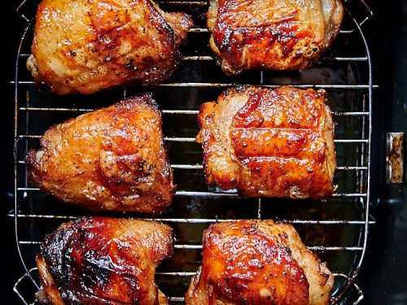

Air Fryer Chicken Thighs

These air fryer chicken thighs are simple,quick, and delicious. Using any combination of seasonings and spices you want combined with your choice of barbeque sauce(or lack thereof) will leave you and your family coming back for more!
These chicken thighs are GREAT for meal prepping or someone just looking for something quick they can save for lunch for a couple days. Combine this with your favorite kind of rice and you got yourself a protein and carbohydrate dense meal that will leave you feeling full and energized for hours! I always cook these after I've had a long day at work, considering the air fryer does all the heavy lifting, I can just pop them in and have dinner ready in 30 minutes, and I urge you to try the same!
Ingredients
- 2 lbs Chicken Thighs (Boneless Skinless or Regular, Your Preference)
- Your Choice Barbeque Sauce
- Baking Powder
- Seasonings of Your Choice (My Choices; Salt, Pepper, Garlic Powder, Onion Powder, Paprika)
Instructions
- Remove the chicken from the package one by one, pat drying, and seasoning BOTH sides. If you are using skin on thighs be sure to pat dry, then rub baking powder onto the skin side, then season.
- When you finish seasoning a piece, place into the air fryer. You should be able to pack around 8 thighs into your tray.
- After you've placed all your chicken in the air fryer tray put the tray back in the air fryer and set it for 400 for 10 minutes.
- Once the 10 minutes is up remove the tray and flip all your thighs. Once you are done put the tray back in and set it at 400 for 8 minutes.
- After the 8 minutes is up remove the tray and brush your thighs with your choice of barbeque sauce. Once all your thighs are coated place back in the air fryer for 2 minutes at 400.
- When those 2 minutes are up your thighs are done! They are going to be VERY hot so be sure to let them rest for about 10 minutes before serving.
Enjoy!